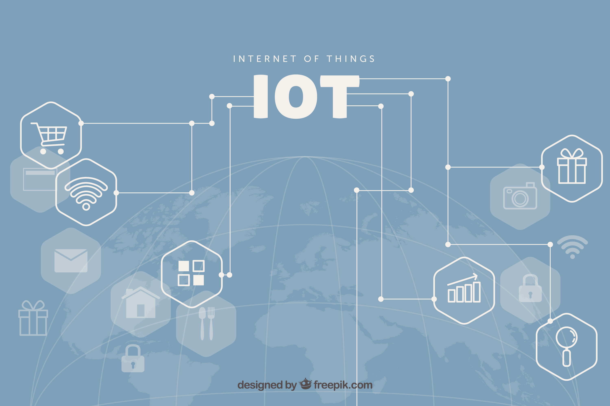

Introduction
The Internet of Things (IoT) refers to the interconnected network of physical devices that communicate and exchange data with one another over the internet. This technology encompasses a wide range of applications across various sectors, including home automation, industrial processes, healthcare, and transportation. By integrating smart devices with internet connectivity, IoT enables enhanced monitoring, control, and automation, ultimately leading to improved efficiency and user experience. This report evaluates and compares IoT systems and services, describes their purpose and applications, and explains their principles and characteristics.
Home Automation
Purpose
The primary purpose of IoT systems in home automation is to enhance the quality of life for residents by providing increased comfort, security, and energy efficiency. These systems allow users to manage various aspects of their home environment remotely, enabling them to respond to situations in real-time and optimize their living spaces according to personal preferences.
Applications
- Smart Thermostats: These devices allow users to manage heating and cooling remotely, optimizing energy consumption based on preferences and occupancy patterns. They learn user habits and can make automatic adjustments to maintain comfort while minimizing energy costs.
- Smart Security Cameras: These provide real-time surveillance and alerts for unusual activities, enhancing home security. They often feature motion detection, night vision, and cloud storage for recorded footage, allowing homeowners to monitor their property from anywhere.
- Smart Lighting Systems: These systems automate lighting based on occupancy, time of day, or user preferences. They can be programmed to turn on or off at specific times or in response to motion, contributing to energy savings and convenience.
Principles
- Sensor Integration:Home automation devices utilize various sensors (temperature, motion, humidity) to gather data about the environment, enabling them to respond intelligently to changes.
- Connectivity:These devices operate over Wi-Fi or Bluetooth, allowing remote access and control through mobile applications. This connectivity facilitates seamless integration with other smart home devices.
- Data Analysis: The systems analyze collected data to optimize performance and adapt to user preferences. Advanced algorithms can predict user behavior and adjust settings accordingly.
Characteristics
- User-Friendly Interfaces: Mobile apps provide intuitive control over devices, making it easy for users to manage their home environment. Many systems offer voice control compatibility for added convenience.
- Energy Monitoring: Many devices offer insights into energy consumption, helping users identify savings opportunities and reduce their carbon footprint.
- Interoperability:Home automation devices often work together within a smart home ecosystem, enhancing functionality and user experience. This interoperability allows for coordinated actions among devices, such as turning off lights when leaving home.
Industrial and Transportation
Purpose
In industrial and transportation sectors, the purpose of IoT systems is to optimize operations, improve efficiency, and reduce costs. These systems enable organizations to monitor equipment and processes in real-time, facilitating better resource management, predictive maintenance, and informed decision-making.
Applications
- Fleet Management:These systems track vehicle locations and performance, optimizing delivery routes and reducing operational costs. They provide insights into fuel consumption, driver behavior, and maintenance needs, promoting more efficient logistics.
- Industrial IoT Sensors:These devices monitor machinery performance and environmental conditions, facilitating predictive maintenance and quality control. By detecting anomalies early, organizations can prevent costly downtimes and maintain production quality.
- Supply Chain Management: IoT solutions track inventory levels and logistics, ensuring timely deliveries and efficient resource allocation. Real-time visibility into the supply chain allows for better planning and responsiveness to demand fluctuations.
Principles
- Telematics: IoT systems in this sector combine GPS tracking with onboard diagnostics to gather comprehensive data about vehicle performance and operational metrics. This integration enhances fleet visibility and management.
- Data Analytics:These systems analyze large datasets to identify trends, predict maintenance needs, and optimize processes. Advanced analytics can reveal insights that drive operational improvements and cost savings.
- Machine Learning: Algorithms are employed to improve decision-making based on historical data and real-time inputs. Machine learning models can adapt to changing conditions, enabling proactive management of resources.
Characteristics
- Centralized Dashboards: These provide a comprehensive view of operations, allowing managers to monitor performance and make informed decisions. Dashboards often include visualizations of key performance indicators (KPIs) for easy interpretation.
- Real-Time Data Collection:Continuous monitoring offers immediate insights into machinery and fleet performance, facilitating quick responses to issues. This capability enhances overall operational agility.
- Scalability:Industrial IoT systems can be expanded to include additional devices and sensors as needed, adapting to changing operational requirements. This scalability ensures that organizations can grow their IoT infrastructure alongside their business needs.
Comparison of IoT Systems
| Aspect | Home Automation | Industrial & Transportation |
|---|---|---|
| Purpose | Enhance user comfort, convenience, and security. | Optimize operations, improve efficiency, and reduce costs. |
| Applications | Smart thermostats, security cameras, lighting control. | Fleet management, IoT sensors, supply chain tracking. |
| Principles | Connectivity, sensors, data analysis. | Telematics, data analytics, machine learning. |
| Characteristics | User-friendly interfaces, interoperability. | Centralized dashboards, real-time data. |
Detailed Comparison
Purposes
- Home Automation:The primary purpose is to enhance the quality of life by providing convenience, improving security, and increasing energy efficiency. For example, smart thermostats adjust heating and cooling based on user preferences, while security cameras offer peace of mind through real-time monitoring.
- Industrial and Transportation IoT:The main goal is to optimize operations and resource management. Fleet management systems track vehicle locations and monitor performance to ensure timely deliveries and reduce operational costs. Industrial IoT sensors help in predictive maintenance, minimizing downtime and enhancing production quality.
Benefits and Risks of IoT
Benefits
- Efficiency:
- Cost Savings: Lower operational costs achieved through optimized processes, energy savings, and predictive maintenance. By preventing equipment failures and reducing energy consumption, organizations can significantly cut expenses.
- Enhanced Security: Improved safety measures in both home and industrial settings, reducing risks of theft and accidents. IoT devices can provide alerts and real-time monitoring, ensuring quick responses to potential threats.
- Data-Driven Insights: Better decision-making through real-time data analysis, leading to informed strategies and improved outcomes. Organizations can leverage analytics to identify trends, optimize operations, and enhance customer experiences.
Risks
- Cybersecurity Threats: The main goal is to optimize operations and resource management. Fleet management systems track vehicle locations and monitor performance to ensure timely deliveries and reduce operational costs. Industrial IoT sensors help in predictive maintenance, minimizing downtime and enhancing production quality.
- Privacy Concerns: Continuous data collection raises privacy issues, requiring transparent data management practices. Users must be informed about how their data is used and protected, which can impact trust in IoT solutions.
- System Reliability: Dependence on technology can lead to operational disruptions if systems fail, highlighting the need for redundancy and backup solutions. Organizations must have contingency plans in place to mitigate potential downtime.
Conclusion
IoT systems play a crucial role in enhancing efficiency, comfort, and security across various sectors. In home automation, they focus on improving the quality of life for residents, while in industrial and transportation sectors, they aim to optimize operations and resource management. Understanding the purpose, applications, principles, and characteristics of these systems is essential for leveraging their full potential. As organizations explore the integration of IoT into their products and services, a balanced approach that considers both advantages and potential pitfalls will be essential for success.